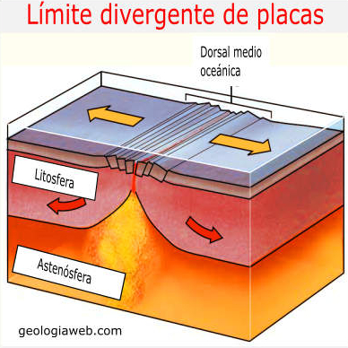
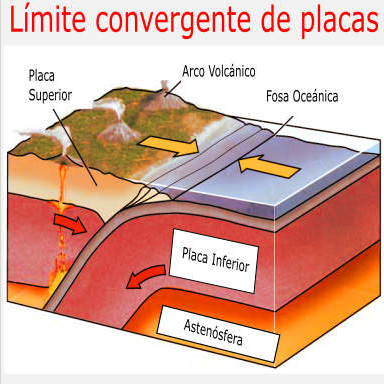

Límites de placa divergentes
En las crestas oceánicas medias, dos placas tectónicas divergen entre sí a medida que se forma una nueva corteza oceánica por el enfriamiento y la solidificación de la roca fundida caliente. Debido a que la corteza es muy delgada en estas crestas debido al tirón de las placas tectónicas, la liberación de presión conduce a la expansión adiabática (sin transferencia de calor o materia) y al derretimiento parcial del manto, causando volcanismo y creando una nueva corteza oceánica. La mayoría de los límites de placas divergentes se encuentran en el fondo de los océanos; por lo tanto, la mayor parte de la actividad volcánica en la Tierra es submarina, formando un nuevo fondo marino. Los fumadores negros (también conocidos como respiraderos de aguas profundas) son evidencia de este tipo de actividad volcánica. Donde la cresta oceánica media está sobre el nivel del mar, se forman islas volcánicas, por ejemplo, Islandia.

Límite de placas convergentes
Las zonas de subducción son lugares donde chocan dos placas, generalmente una placa oceánica y una placa continental. En este caso, la placa oceánica se subduce, o se sumerge, debajo de la placa continental, formando una trinchera oceánica profunda en alta mar. En un proceso llamado fusión de flujo, el agua liberada de la placa subductora reduce la temperatura de fusión de la cuña del manto suprayacente, creando así magma. Este magma tiende a ser extremadamente viscoso debido a su alto contenido de sílice, por lo que a menudo no alcanza la superficie sino que se enfría y solidifica en profundidad. Cuando llega a la superficie, sin embargo, se forma un volcán. Ejemplos típicos son el Monte Etna y los volcanes en el Anillo de Fuego del Pacífico.

Puntos calientes
Los puntos calientes son áreas volcánicas que se cree que están formadas por plumas de manto, que se supone que son columnas de material caliente que se elevan desde el límite núcleo-manto en un espacio fijo que causa la fusión de grandes volúmenes. Debido a que las placas tectónicas se mueven a través de ellas, cada volcán se vuelve inactivo y eventualmente se vuelve a formar a medida que la placa avanza sobre el penacho postulado. Se dice que las islas hawaianas se formaron de esa manera; también lo ha hecho la llanura del río Snake, con la caldera de Yellowstone como parte de la placa de América del Norte sobre el punto caliente. Esta teoría, sin embargo, ha sido puesta en duda.